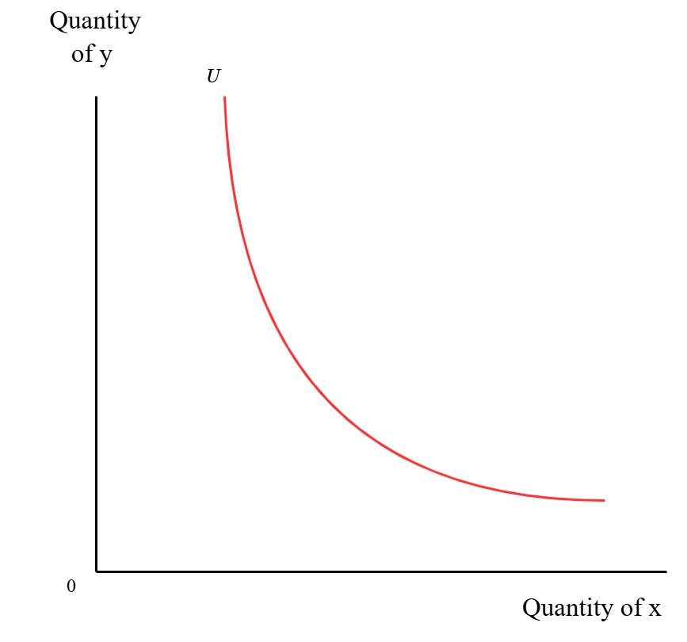
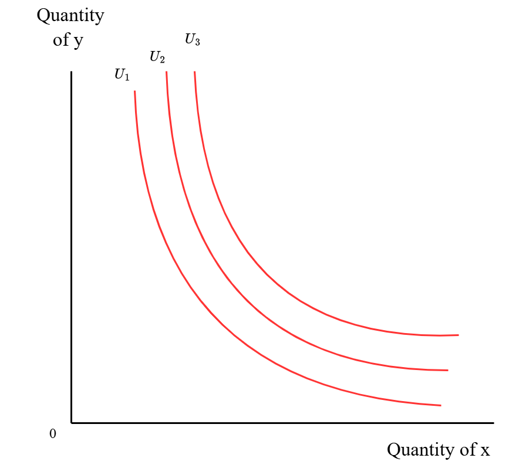
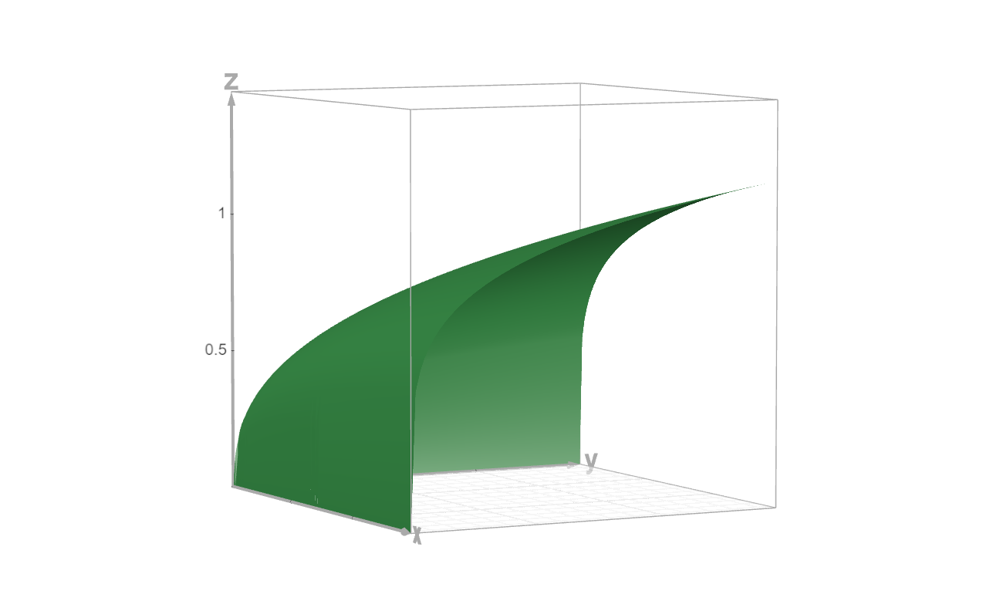
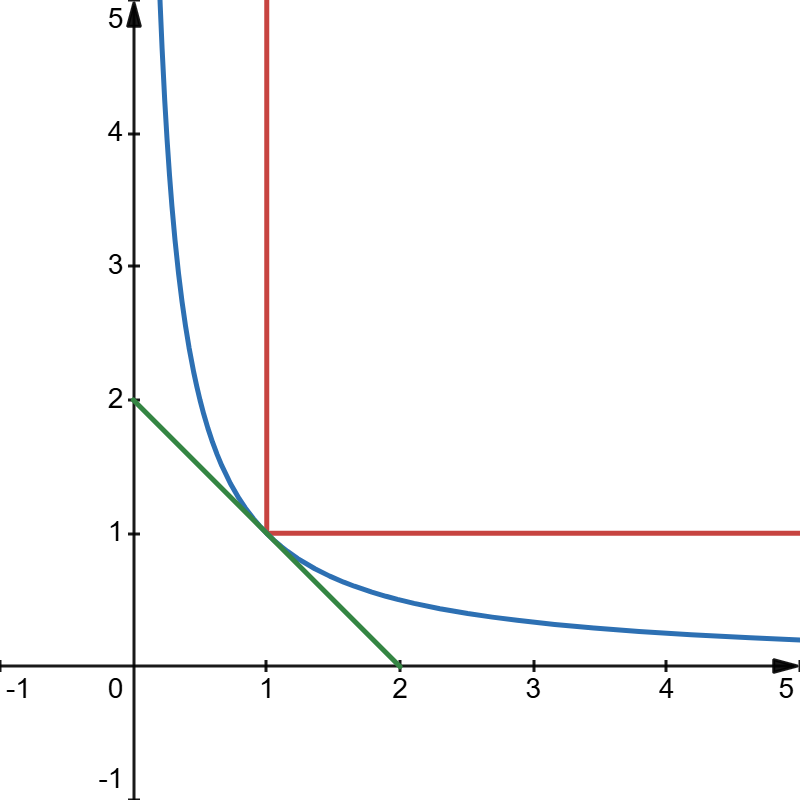
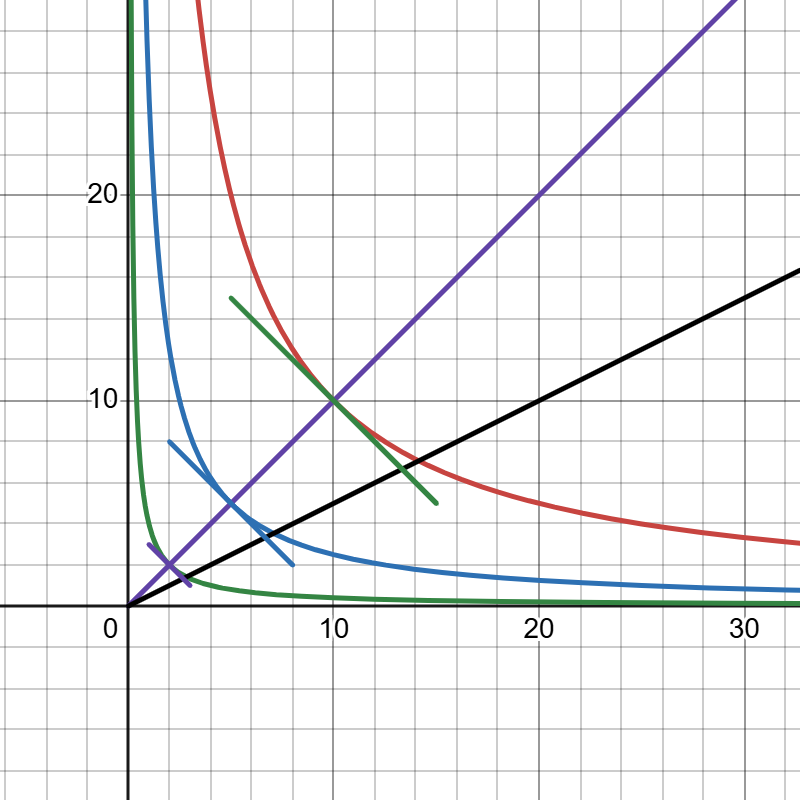
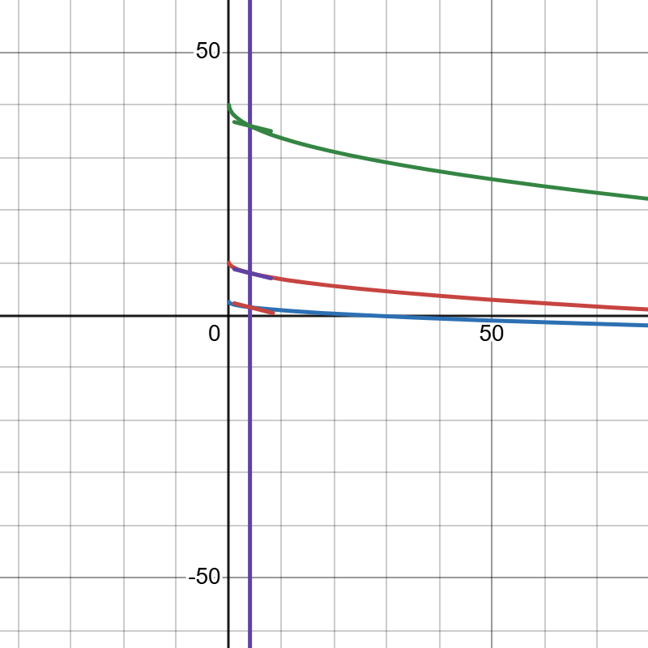
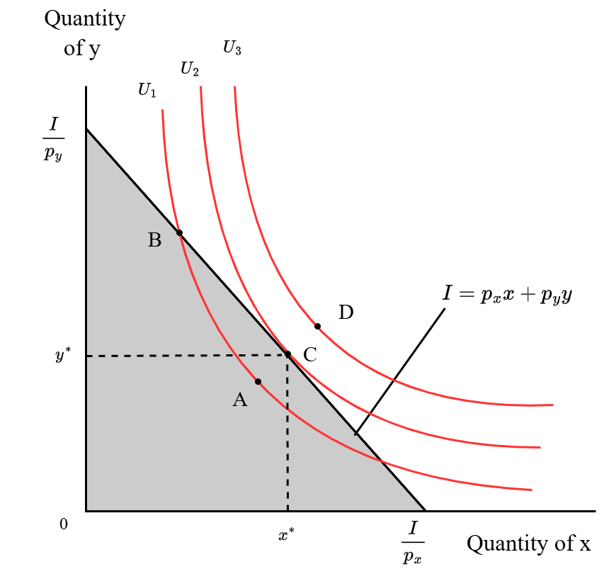
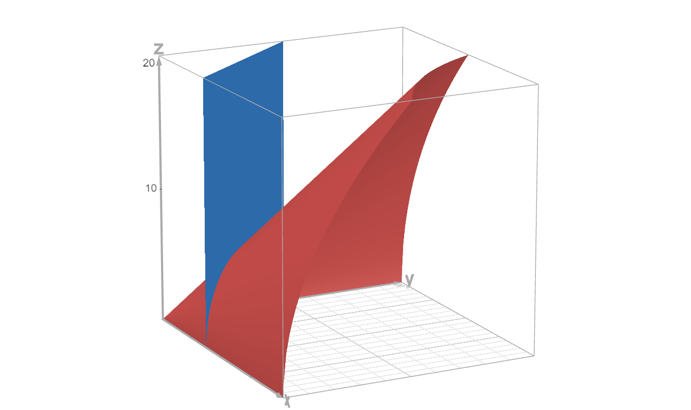

效用其实就是消费者偏好的排序，如果消费者相比于$x_1$数量的商品A和$y_1$数量的商品B的组合，更偏好$x_2$数量的商品A和$y_2$数量的商品B的组合，那么后者的效用水平就高于前者。由于带有主观性，在实际应用中，效用很难被直接测量。但是可以从数学上对效用的一些性质进行模拟。
无差异曲线和边际替代率
由以上关于效用的定义可知，商品数量的组合能够影响效用水平。因此，我们先将效用水平固定，从而研究商品数量的组合与效用水平之间的关系。由具有同一效用水平的商品数量组合构成的曲线$U(x,y)=c$被称为无差异曲线，其中$x,y$分别代表两种商品的数量。因为无差异曲线代表的是同一效用水平$c$，那么曲线上的点所代表的所有商品数量组合$(x,y)$所具有的效用都是相同的。
要保持同一效用水平，一个商品的数量增加，另一个商品的数量就要相应地减少（前提是两个商品都是经济品，也就是它们的边际效用$\frac{\partial U}{\partial x} < 0$），换句话说，每增加1单位的$x$，就必须放弃一定数量的$y$，才能保持效用水平不变。所以无差异曲线的斜率是负的，因为一个变量的增加意味着另一个变量的减少。用数学表示为$\frac{\mathbf{d}y}{\mathbf{d}x} < 0$。其相反数$-\frac{\mathbf{d}y}{\mathbf{d}x}$被称为边际替代率 (Marginal Rate of Substitution, MRS)，代表无差异曲线的斜率的相反数，或者是保持同一效用水平时增加1单位$x$的数量而要放弃的$y$的数量。又根据隐函数的求导规律有$\frac{\mathbf{d}y}{\mathbf{d}x}=-\frac{U_x}{U_y}$，所以边际替代率$$MRS=-\frac{dy}{dx}=\frac{U_x}{U_y}$$
另外，我们假设当一个$x$的数量越来越多、$y$的数量越来越少时，要保持同一效用水平，因增加1单位的$x$而放弃的$y$将越来越少。因为个体会越来越不愿意放弃本来就很少的$y$来增加本来就很多的$x$。在图像上表现为无差异曲线的斜率越来越大，或者说斜率的相反数越来越小（因为斜率是负的）。用数学表示为$\frac{\mathbf{d}(-\frac{\mathbf{d}y}{\mathbf{d}x})}{\mathbf{d}x} < 0$，也就是$\frac{\mathbf{d} MRS}{\mathbf{d}x} < 0$即边际替代率递减。根据边际替代率递减的假设，无差异曲线的斜率不仅是负的而且是递增的，所以它的图像大概就像下面这样：

无差异曲线是凸向原点的，而且无差异曲线上的点以及曲线右上方的点共同构成了一个凸集。这代表了曲线的切线不会与曲线相交。至此，我们确定了同一效用水平下的无差异曲线的大概形状。
但是上面的无差异曲线只代表了一个效用水平，也就是一个固定的$c$，当函数$U$取不同的值时，坐标系上就会出现多条无差异曲线。这些无差异曲线像等高线一样，标示着不同的效用水平。所以函数$U(x,y)$在二维坐标中的样子应该如下：

在3维坐标中效用函数的图像如下 ($z=x^{0.2}y^{0.2}$，$z$代表效用水平)：

效用函数
前面根据边际效用递减和边际替代率递减，推出效用函数是凸向原点的。但是曲面的弯曲程度不确定。不过可以用一个通用的模板来概括这些曲率不一的效用函数，这就是CES (Constant Elasticity of Substitution)函数： $$U(x,y)=(\alpha x^\rho +\beta y^\rho)^{\frac{1}{\rho}},\text{其中}\alpha+\beta=1, \alpha> 0, \beta > 0$$ 这个效用函数的边际替代率为 $$MRS=\frac{U_x}{U_y}=\frac{\alpha}{\beta}(\frac{y}{x})^{1-\rho}$$ 边际替代率的百分比变化为$\frac{dMRS}{MRS}=d\ln{MRS}=d\ln{[\frac{\alpha}{\beta}(\frac{y}{x})^{1-\rho}]}=d[\ln{\frac{\alpha}{\beta}}+(1-\rho)\ln{\frac{y}{x}}]=(1-\rho)d\ln{\frac{y}{x}}$；$\frac{y}{x}$的百分比变化为$\frac{d\frac{y}{x}}{\frac{y}{x}}=d\ln{\frac{y}{x}}$。令 $$\sigma_{\frac{y}{x},MRS}=\frac{y/x\text{的百分比变化}}{MRS\text{的百分比变化}}=\frac{\frac{d\frac{y}{x}}{\frac{y}{x}}}{\frac{dMRS}{MRS}}=\frac{\frac{d\frac{y}{x}}{\frac{y}{x}}}{\frac{d\frac{U_x}{U_y}}{\frac{U_x}{U_y}}}$$ 则有： $$\sigma=\frac{d\ln{\frac{y}{x}}}{(1-\rho)d\ln{\frac{y}{x}}}=\frac{1}{1-\rho}$$ 这就是替代弹性，即排除了单位干扰后的边际替代率与商品数量比例之间的关系，它反映了商品之间的数量比例对边际替代率是否敏感，即当MRS变动1个百分比时，商品数量的比例$\frac{y}{x}$会变动多少个百分比。而在固定的预算约束下，商品之间的数量比例的变化实际上代表的是商品之间的替代关系。因此，替代弹性越高，商品之间的数量比例对边际替代率越敏感，商品之间越容易相互替代，反映在图像上则是曲线更加平缓；替代弹性越低，商品之间的数量比例对边际替代率越不敏感，商品直接越难相互替换，反映在图像上就是曲线更加弯曲。MRS决定了无差异曲线在每个点上的斜率，替代弹性决定了无差异曲线的弯曲程度，这两个指标共同决定了无差异曲线最终的形状。
下图中：
- 红色曲线为$1=\min(x,y)$，替代弹性$\sigma \to 0$，$\rho \to -\infty$
- 蓝色曲线为$1=x^{0.5}y^{0.5}$，替代弹性$\sigma=1$， $\rho=0$
- 绿色曲线为$1=0.5x+0.5y$，替代弹性$\sigma \to \infty$， $\rho \to 1$

可以看到随着替代弹性的逐渐变大，曲线从直角弯变成了直线，曲率逐渐变小。不同替代弹性下的效用函数
现在来具体分析一下不同的替代弹性是如何决定以上3种不同形式的效用函数的。
替代弹性→∞
根据上面的推断，当替代弹性$\to \infty$时，曲线将变得非常平缓，甚至成为了一条直线。下面我们从具体的计算中来验证这一猜想。
$\sigma \to \infty$$时，$$\rho \to 1$，当$\rho=1$时，$$U(x,y)=\alpha x + \beta y$$ 正是完全替代时的效用函数，即一条斜率为负的直线，此时，$MRS=\frac{\alpha}{\beta}$，商品之间可以完全互相替代，比如相同价位不同品牌的牙刷。
替代弹性=1
$\sigma \to 1$时，$\rho \to 0$ $$U(x,y)=\lim_{\rho \to 0}(\alpha x^\rho+\beta y^\rho)^\frac{1}{\rho}$$ 先取对数$\ln U(x,y)=\lim_{\rho \to 0}\frac{\ln(\alpha x^\rho + \beta y^\rho)}{\rho}$。该式分子趋于0，分母趋于$\ln(\alpha + \beta)=\ln{1}=0$$，构成$$\frac{0}{0}$型，用洛必达法则。
- 分子求导：$\frac{\alpha x^\rho \ln{x}+\beta y^\rho \ln{y}}{\alpha x^\rho + \beta y^\rho}$
- 分母求导：$1$
替代弹性→0
这种情况下要用到CES效用函数的一种变式： $$U(x,y)=[(\alpha x)^\rho + (\beta y)^\rho)]^{\frac{1}{\rho}}$$ $\sigma \to 0$时，$\rho \to -\infty$，令$\alpha x= X, \beta y = Y$，分类讨论：
- $X < Y$时，$U(x,y)=\lim_{\rho \to -\infty}[Y^\rho(\frac{X^\rho}{Y^\rho}+1)]^{\frac{1}{\rho}}=\lim_{\rho \to -\infty}[Y^\rho((\frac{X}{Y})^\rho+1)]^{\frac{1}{\rho}}$，因为$\frac{X}{Y} < 1$，所以$(\frac{X}{Y})^\rho \to +\infty$，因此$U(x,y)=\lim_{\rho \to -\infty}(Y^\rho \frac{X^\rho}{Y^\rho})^{\frac{1}{\rho}}=\lim_{\rho \to -\infty}(X^\rho)^\frac{1}{\rho}=X$
- 当$X > Y$时，$U(x,y)=\lim_{\rho \to -\infty}[X^\rho(\frac{Y^\rho}{X^\rho}+1)]^{\frac{1}{\rho}}=\lim_{\rho \to -\infty}[X^\rho((\frac{Y}{X})^\rho+1)]^{\frac{1}{\rho}}$，因为$\frac{Y}{X} < 1$，所以$(\frac{Y}{X})^\rho \to +\infty$，因此$U(x,y)=\lim_{\rho \to -\infty}(X^\rho \frac{Y^\rho}{X^\rho})^{\frac{1}{\rho}}=\lim_{\rho \ to -\infty}(Y^\rho) ^{\frac{1}{\rho}}= Y $
齐次性和拟线性效用函数
齐次函数是指当所有变量同时加倍时，函数值也相应地加倍的函数。具体来说，如果 $$f(tx_1,tx_2,\cdots,tx_n)=t^kf(x_1,x_2,\cdots,x_n)$$ 那么就称函数$f$是$k$次的齐次函数。
齐次函数的图像在坐标中像一条条等高线。

上图中的3条曲线分别为： $$\begin{cases} 10=x^{0.5}y^{0.5} \\ 10=(2x)^{0.5}(2y)^{0.5} \\ 10 = (5x)^{0.5}(5y)^{0.5} \\ \end{cases}$$ 所有变量先是变成原来的2倍，再变成原来的5倍。在图像上表现为逐渐远离原点的3条曲线。过原点做一条射线$y=x \ (x\geq0, y\geq0)$穿过3条曲线，并在3个交点分别做每条曲线的切线，那么这3条切线的斜率是相等。改变射线的角度同样能在射线与曲线的交点处得到斜率相等的曲线。这种现象在数学上表现为齐次函数的变量间的导数只与变量之间的比例（射线的角度）有关。 $$\frac{dy}{dx}\bigg\vert_{(tx,ty)}=-\frac{f_x(tx,ty)}{f_y(tx,ty)}=-\frac{t^{k-1}f_x(x,y)}{t^{k-1}f_y(x,y)}=-\frac{f_x(x,y)}{f_y(x,y)}=\frac{dy}{dx}\bigg\vert_{(x,y)}$$ 图像中射线和曲线交点处的切线斜率只取决于射线的角度，也就是$\frac{y}{x}$；相应地，$\frac{dy}{dx}$的取值也取决于变量的比例，即$\frac{y}{x}$。图中紫色射线与3条曲线的3个交点分别为：$(2,2),(5,5),(10,10)$。这些点的横纵坐标的比例$\frac{y}{x}=1$，都是相同的，所以这些点上的曲线切线的斜率也是相同的。
以上CES效用函数都是齐次的，变量间的导数只与变量间的比例有关，换句话说，只要变量间的比例确定了，那么变量间的导数，也就是边际替代率的相反数也就是确定不变的，因此边际替代率也是确定的，无论函数变成了原来的多少倍，或者说，无论效用水平是多少。总结一下就是，效用函数即使没有固定的效用水平，即使在图像上是由无数的等高线组成的，但是不妨碍我们去确定它的边际替代率，因为对于齐次函数中的任意两条等高线，在变量间的比例相同时（在同一条射线上时），边际替代率也是相同的。这就让我们可以将效用函数当作它其中一条等高线来研究，因为这条等高线的性质可以推广到所有等高线。这样一来，原本的三维图形可以当作二维左边的一条曲线来研究。
拟线性效用函数
还存在不是齐次函数的效用函数，比如拟线性效用函数。
$$U(x,y)=y+f(x) \ \text{其中}f(0)=0, f'(x) > 0,f''(x) < 0$$拟线性效用函数分为两部分：
- $y$上的函数是线性的
- $x$上的函数是凹函数，常用的有$f(x)=a\ln(1+x)$和$f(x)=ax^{0.5}$
但是，不像齐次函数，拟线性效用函数中变量间的导数只与$$f(x)$$的导数有关： $$\frac{dy}{dx}=-\frac{U_x}{U_y}=-f'(x)$$ 下面图像中的曲线从上到下分别为： $$\begin{cases} 10=\frac{1}{4}y+(\frac{1}{4}x)^{0.5} \\ 10=y+x^{0.5} \\ 10=4y+(4x)^{0.5} \end{cases}$$

做直线$x=4$穿过这3条曲线，过直线与曲线的交点做切线，则这3条切线的斜率相等。因为直线上的$x$相同，所以得到的$f'(x)$相同，从而斜率$\frac{dy}{dx}$相同。做另一条垂直于x轴的直线也会得到相同的结果。效用最大化问题和拉格朗日函数
当个人的预算（或收入）固定时，个人能够购买的商品数量组合是受限的，所有商品的总金额不能大于预算。如果只考虑2种商品的情况，那么固定的个人预算或收入$I$将导致约束条件：$$I\geq p_xx+p_yy$$ 为了获得最高水平的效用，该式必须取等号，也就是要花光所有预算或收入。将代表这一约束条件的直线绘制在无差异曲线图中，就得到了下图：

约束条件直线$I=p_xx+p_yy$穿过代表效用函数$U=U(x,y)$的无差异曲线，并与其中某一条相切。如果无差异曲线与直线不相交，则代表在约束条件下达不到这一效用水平；如果无差异曲线与直线有交点，则代表在约束条件下能够达到这一效用水平。由图可知，与直线存在交点，且效用水平最高的无差异曲线就是与直线相切的那条曲线。因此，线性约束条件下的效用最大化的问题，其实就是找出直线和无差异曲线的切点$C$的问题。
或者换种思路，在三维坐标中观察效用函数，并将约束条件直线投影到效用函数的曲面上：

可以看到投影到曲面上的约束条件直线形成了一条轨迹。约束条件下的效用最大化问题，就变成了求这条轨迹上的最高点的问题，而不是求整个效用函数的最高点的问题。
先暂时回到二维坐标上，求切点$C$。在切点$C$处，直线与曲线的斜率相同，即$\frac{\mathbf{d}y}{\mathbf{d}x}=-\frac{p_x}{p_y}$，又因为$\frac{\mathbf{d}y}{\mathbf{d}x}=-\frac{U_x}{U_y}$，所以$\frac{U_x}{U_y}=\frac{p_x}{p_y}$，也就是说两个商品的边际替代率等于它们的价格比。因此，假设$U_x=\lambda p_x$，那么就会有$U_y=\lambda p_y$。
另外，又由约束条件可得$I-p_xx-p_yy=0$，所以可以构造函数$$\mathscr{L}=U(x,y)+\lambda(I-p_xx-p_yy)$$。当它的一阶偏导数都为0时有： $$\begin{aligned} \frac{\partial \mathscr{L}}{\partial x} =U_x-\lambda p_x=0 &\Longleftrightarrow U_x=\lambda p_x \\ \frac{\partial \mathscr{L}}{\partial y} =U_y-\lambda p_y=0 &\Longleftrightarrow U_y=\lambda p_y \\ \frac{\partial \mathscr{L}}{\partial \lambda} =I-p_xx-p_yy=0 &\Longleftrightarrow I=p_xx+p_yy \\ \end{aligned}$$ 因此$\mathscr{L}$取得极值的一阶条件就是直线和无差异曲线相切的条件。$\mathscr{L}$就是拉格朗日函数。
但是要保证一阶条件求得的解确实是局部最优解，即在约束条件下的最大效用，还必须要满足二阶条件： $$\begin{cases} d^2U < 0 \\ d(I-p_xx-p_yy)=0 \end{cases}$$ 第一个式子保证了从临界点向任何方向微小移动，效用水平的变动$\Delta U$都会减少，即临界点是局部最小值；第二个式子保证了变量只能沿着约束条件限定的方向移动，也就是沿着三维图像中的那条轨迹移动。综合起来就是，这两个条件保证了从临界点（一阶偏导数为0的点）沿轨迹向前移动，斜率会变小，因此临界点就是效用函数的局部最大值。 $$\begin{aligned} &\begin{cases} \mathbf{d}^2U=U_{xx}\mathbf{d}x^2+2U_{xy}\mathbf{d}x\mathbf{d}y+U_{yy}\mathbf{d}y^2 \\ -p_x\mathbf{d}x-p_y\mathbf{d}y=0 \end{cases} \\ &\begin{cases} \mathbf{d}^2U=U_{xx}\mathbf{d}x^2+2U_{xy}\mathbf{d}x\mathbf{d}y+U_{yy}\mathbf{d}y^2 \\ \mathbf{d}y=-\frac{p_x}{p_y}\mathbf{d}x=-\frac{U_x}{U_y}\mathbf{d}x \end{cases} \\ &\mathbf{d}^2U=U_{xx}\mathbf{d}x^2+2U_{xy}\mathbf{d}x\mathbf{d}y+U_{yy}\mathbf{d}y^2 \\ &\mathbf{d}^2U=\frac{\mathbf{d}x^2}{U_y^2}(U_{xx}U_y^2-2U_{xy}U_xU_y-U_{yy}U_x^2) \end{aligned}$$ 要使$\mathbf{d}^2U < 0$，只需要$U_{xx}U_y^2-2U_{xy}U_xU_y-U_{yy}U_x^2<0$即可。 又由边际替代率递减$\frac{\mathbf{d}(-\frac{\mathbf{d}y}{\mathbf{d}x})}{\mathbf{d}x} < 0$可以推出： $$\begin{aligned} \frac{d\frac{U_x}{U_y}}{\mathbf{d}x}&=\frac{\mathbf{d}U_x\cdot U_y-\mathbf{d}U_y\cdot U_x}{U^2_y\cdot \mathbf{d}x} \\ &=\frac{(U_{xx}\mathbf{d}x+U_{xy}\mathbf{d}y)U_y-(U_{yy}\mathbf{d}y+U_{yx}\mathbf{d}x)U_x}{U^2_y\mathbf{d}x} \\ &=\frac{U_x^2U_{yy}-2U_{xy}U_xU_y+U_y^2U_{xx}}{U_x^3} < 0 \end{aligned}$$ 而且$U_x=\frac{\partial U}{\partial x}>0$，所以$U_x^2U_{yy}-2U_{xy}U_xU_y+U_y^2U_{xx}<0$ 综上所述，只要边际替代率递减 ($\frac{\mathbf{d}MRS}{\mathbf{d}x} < 0$)，满足一阶条件的临界点就一定是局部最大值。以上结论可以推广到更多变量的效用最大化问题。拉格朗日函数是求解约束条件下的极值问题的最实用的工具。
总结
求解效用最大化问题的关键有2个：
- 对商品数量和效用水平的关系建模——CES效用函数模型。建模的起点是边际替代率递减的假设，重点是替代弹性对CES函数最终形式的影响。
- 确定在线性约束条件下求最优解的方法——拉格朗日函数。拉格朗日函数将约束条件下的效用最大化问题转化为无约束优化问题，通过求解拉格朗日函数的一阶条件来找到最优解。而且边际替代率递减的假设保证了满足一节条件的最优解就是局部最大值，不需要进一步验证二阶条件。